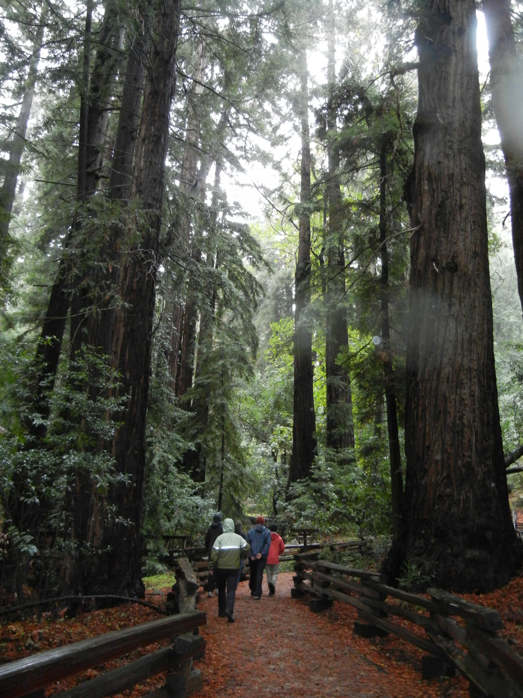
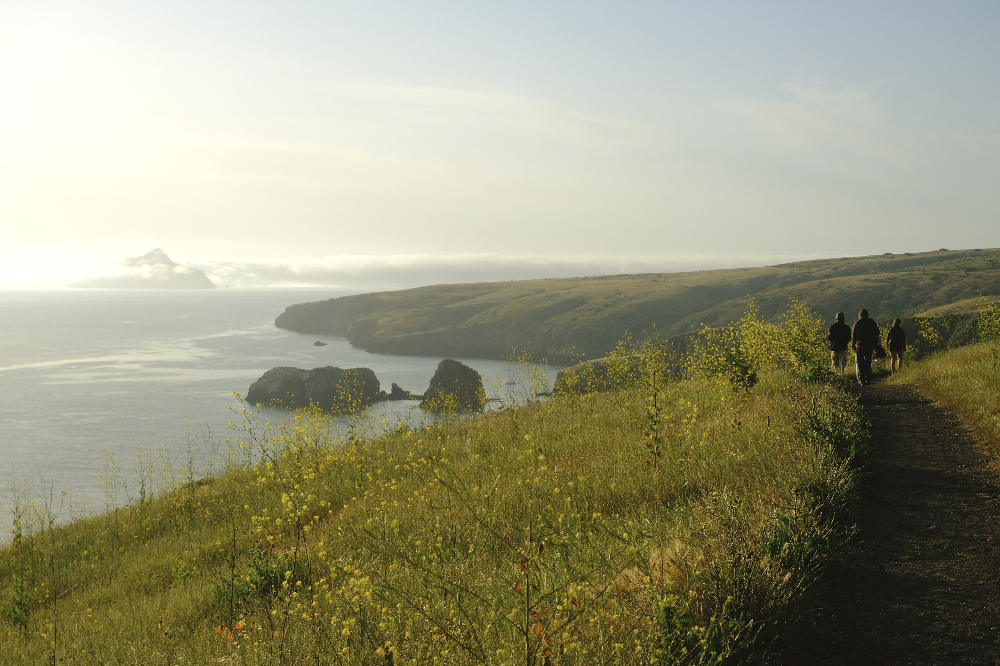
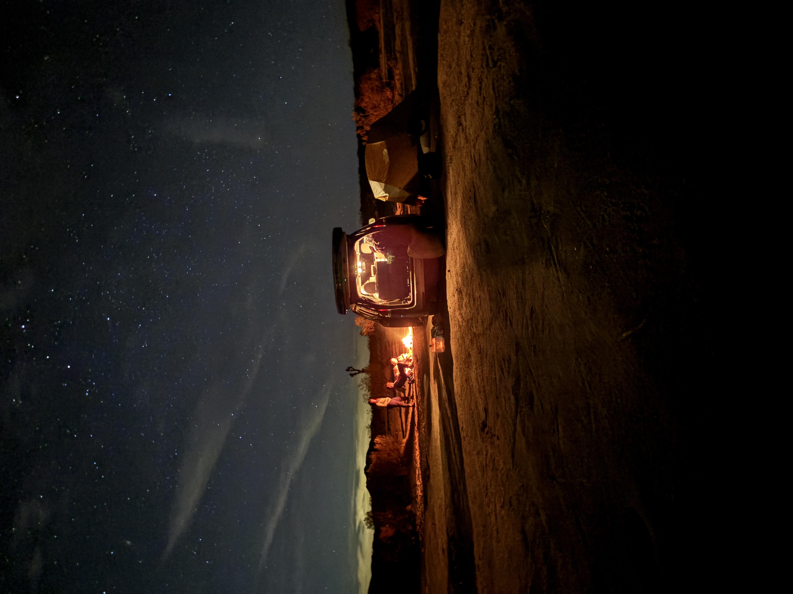
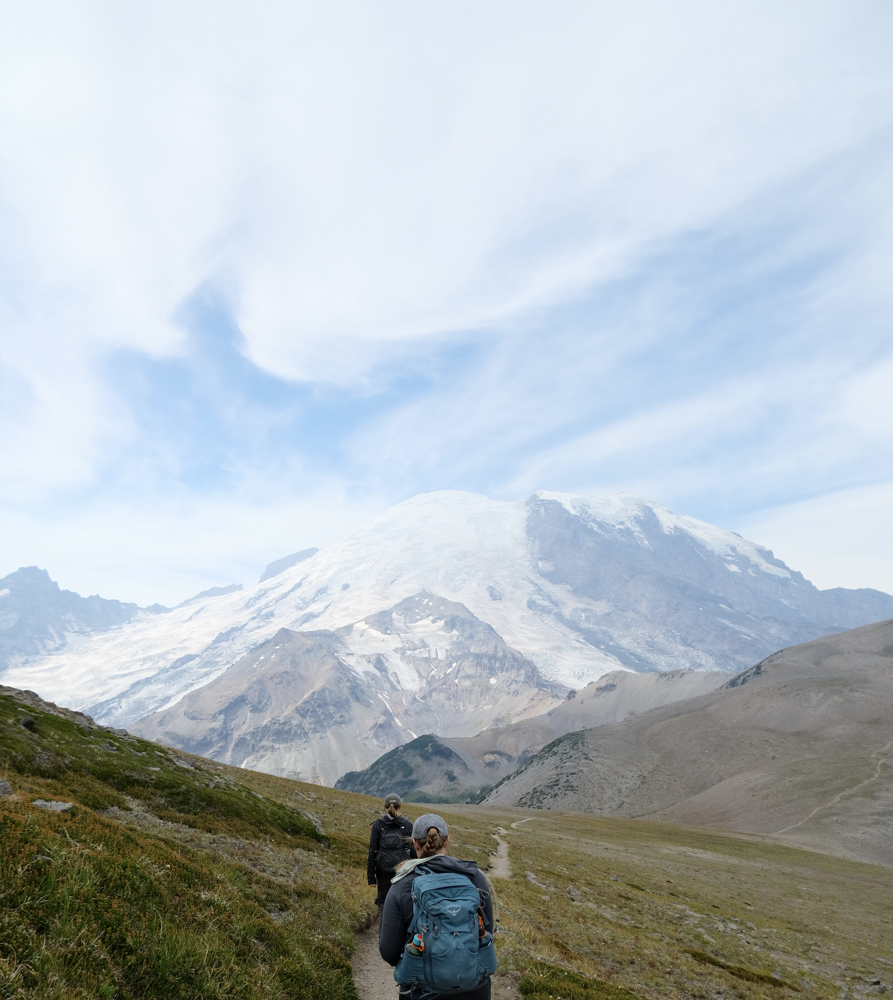

Under the Pfieffer Canopy
Some places don't reveal themselves — they absorb you. Pfeiffer Big Sur is one of them. We followed three hikers as they disappeared beneath 300-foot redwood canopies, tracing routes where fog pools at noon and light falls in shafts so thick you could almost grab it. A dispatch from the quiet, humid world below the treeline — and a meditation on why the best campsites are the ones you almost pass by.

With the Santa Cruz Island Foxes
The mainland is a smudge on the horizon and the other island floats like a rumor. On the Channel Islands, you hike until the trail runs out — then remember that California used to be this wild everywhere.

Above the Weather: A Night at Fuji's Last Hut
There's a silence that exists above the clouds at 3,700 meters — partly because the air is thin, partly because everything below has gone completely out of reach. Two rolls of film before the sunrise crowds arrived.

Stars, Rocks, and Joshua Trees
Red Rock Canyon after dark: no light pollution, no cell service, and one silhouetted Joshua tree holding up the Milky Way. A field guide to sleeping under the desert's oldest sentinels — and waking up changed.

The Mountain That Makes Its Own Weather
Mount Rainier doesn't care about your plans. At 14,000 feet, it generates its own clouds, its own wind, its own rules — and the hikers who love it most are the ones who've learned to show up anyway and see what they get. A trail report from the slopes of the Pacific Northwest's most humbling peak.

An Hour from Shinjuku, A World Away
Perched above the Tama River valley, Mount Mitake has been a place of pilgrimage for over a thousand years — and somehow it still feels like a secret. Ancient cedar forest, a shrine at the summit, and trails quiet enough to hear the wind move through the trees. The mountain that Tokyo forgot to tell anyone about.